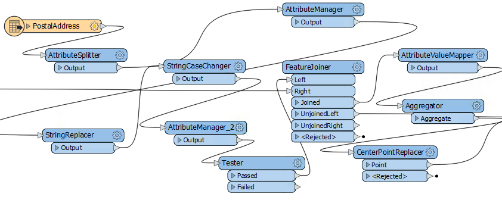

I learned about best practice the hard way when I had to work on someone else’s workspaces. My colleague had organized the workspaces so poorly that the whole operation took me three times as long as it should have!
After completing this lesson, you’ll be able to:
If a workspace runs to completion and produces the output you want, it can’t be wrong, can it? Well, yes, it can. It's not enough just to put together a functioning workspace; it's also vital to use FME in an efficient and scalable manner.
In general terms, best practice means the best way of doing something; in other words, carrying out a task effectively and efficiently.
Despite the word 'best,' we're not presuming the ideas here will meet every need and occasion. The best description of this concept I've heard – and one that fits well here – is:
A very good practice to consider in this situation based on past experience and analysis.
Best practice in FME can help a user to…
In this course, we’ll provide a guide to the preferred design for workspaces. The correct style makes a workspace easier to interpret, particularly in the long run when the author might return to it after a period of inactivity.
“A good-looking, well-organized workspace gives the customer the feeling that you have done quality work.”
Style is perhaps the most obvious component of FME Best Practice. You can tell at a glance when a workspace is well-styled and when it is not. As the quote above implies, a well-designed workspace demonstrates competence.
But style is more than looks; a properly designed workspace provides many benefits as it is further developed and edited in the future.
Good style makes it easier to navigate and understand an existing workspace. Design is essential when workspaces might need to be edited by other users or when you intend to make edits yourself at a later date.
Specifically, a good style can help a user to…
Do you need proof? Well, would you want to be given the task of editing this workspace? Can you even tell what this section does or - more importantly - why?

The positioning of workspace objects and the care taken in connecting them can make the difference between a poorly-designed workspace and one that is visually attractive and efficient.
Layout methods vary from user to user. Some users like to line up objects so that all connections are horizontal:

Others prefer the tops of objects to be aligned horizontally, with angled connections:

Some prefer to align object edges vertically:

The style used is more of a personal preference than a definite rule, but consistency is important. A workspace with no apparent layout style, or an inconsistent one, does not inspire confidence in the author's abilities!
Grids and Guides are a tool to help align workspace objects neatly and tidily. You can access this functionality through View > Grid and Guides on the Workbench menu bar.

Show Grid displays a grid of lines on the Workbench canvas. Snap to Grid causes all objects – such as the KMLStyler highlighted – to snap onto the intersection of grid lines when moved. In this way, you can more easily line up objects.

Show Guides causes guidelines to be displayed on the Workbench canvas whenever an object is moved and lines up approximately to another canvas object. Snap to Guides snaps an object onto a highlighted guideline. Guides are enabled by default.

These two tools make it very simple to align workspace objects in a pleasing style.
The Autolayout tool appears on the toolbar of FME Workbench:

Clicking the toolbar button will layout either all of the workspace or just objects that are currently selected:

As you can see, Autolayout tends to use a horizontal pattern, with the tops of objects aligned. Therefore it's better to select groups of transformers and run the tool on them, rather than trying to lay out the entire workspace in a single action.